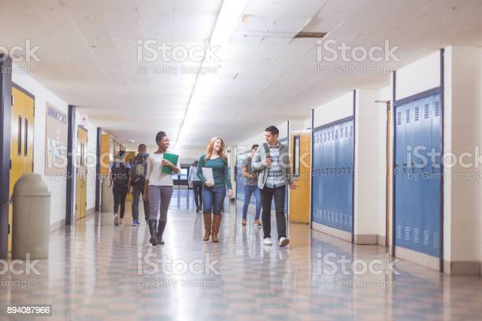

Our Masterworks
Operation: Orphanos
Whilst talking about more CSR Acts which
we as a company could do, the topic of
‘Why not attempt to empower and give
something back to the children who had
lost it all?’
, and thus, Operation: Orphanos
was born.
Operation: Orphanos is when we as a whole go to local Orphanages and give as much as we can
towards the children to try and inspire them to look forward to a future. There are many
employees at Hephaestus’ Games Studio who, at a very young age had lost their parents and
had given up on their future for a long time. Thus, we wanted to try to be the light which
provides safety and hope for those children who walked down the same path.
Unlike Operation: Young Minds, we focus solely on developing their artistic skills and
thinking by doing activities such as taking their ideas and transforming it in a videogame
which we would publish, and all profits made from that game would go back towards the
orphanage.
Another would be bringing their art ‘to life’ by having professionals remake it and publish
both their art and the remade art on social media, as well as have it printed on t-shirts
which we’d donate to them. We also love doing taking their ideas for toys and other fun
creations that they’d like, then having them 3D printed and painted exactly to how they’d
like it to bring their creations to reality.
To find out more about which orphanages we support or other information, feel free to
contact us!
Operation: Young Minds

If there's one thing we here at Hephaestus'
Games Studio strive to accomplish for the
entirety of its lifespan, its to inspire and
cultivate the minds of the youth of today.
Minds began when the topic of ‘How would
you have like to have started Game Development’ was brought about within a
meeting. The answer? We would have liked to have learned
about it in High School.
And so, we decided to volunteer our services towards local High schools in order to
inspire and guide the
youth who wished to make a career within the Game Development industry. We proposed the idea
to the Principals, and after plenty of paperwork, we managed to start Game Development Clubs
within 10 different schools in order to teach the students the basic skills needed to create
a Video Game, such as 3D Modelling, Character Creation, Basic C# code etc.
We provided them with the necessary licensed applications as well as professional resources
and experienced employees who specialized in those fields.
To give the students more motivation, we devised a competition where each club would create
a Video Game to the best of their abilities, and at the end of the year, we would not only
feature the top three games on our website, but would reward the top three with a cash
prize.
Lastly, to the top fifteen students who put in the most amount of effort into the games
amongst all the schools, we would provide tuition fees to pay off any field that they desire
which follows game development, such as Graphic Design etc.
In order to find out more about Operation: Young Minds, such as what software or other
resources we use or which schools we go to, feel free to contact us!